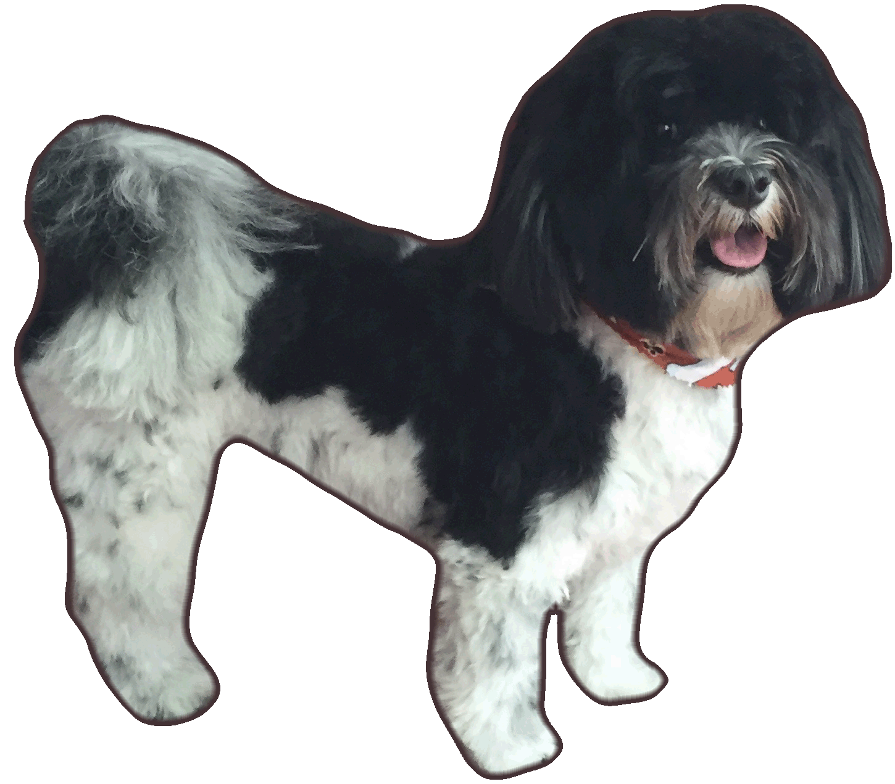

Pilaf is a six year old Havanese dog, born in Tracy, CA. Desperate to escape the nightmarish hellscape that is the Sacramento Valley (much like the titular character from recent Oscar-nominated film, Lady Bird), he was eventually rescued by Heidi when he was 6 months old. Not quite a boy, but not yet a man, he was crowned "Emperor Pilaf" -- a minor, often foiled villain from the children's TV show, Dragon Ball.

Pictured below: On the right, Pilaf attempting to "play" with another dog. Middle: Pilaf asked to pose for a picture on the pitcher's mound, at the behest of his crazed mother. On the left, Pilaf resting after a hard day of sleeping.
 Copyright Heidi Jiang 2018
Copyright Heidi Jiang 2018